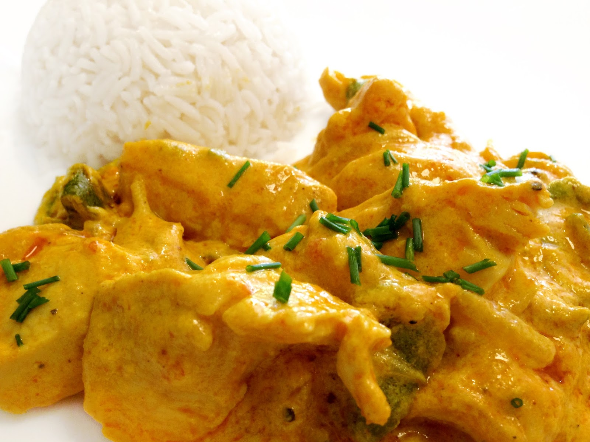

Solomillos de pavo con salsa curry
| Ingredientes |
- 2 solomillos de pavo
- 1 cebolla
- 1 yogur natural
- 120 ml nata para cocinar
- 1 cucharadita clavo molido
- 1 cucharadita cúrcuma
- Curry al gusto
- 2 cucharadas coco rallado
- Comino
- Sal
- Aceite de oliva
|
Preparación
Se cortan las pechugas en daditos y se aliñan con un poquito de sal pimienta y comino al gusto. Mientras se calienta el aceite, se deja reposar el pavo en un bol que vaya cogiendo el aliño. Una vez se caliente el aceite, se sofríe la carne
Cuando la carne lleve unos 15 minutos al fuego, se agrega la mezcla de especias (clavo, cúrcuma y curry. Yo las echo en un cuenquecillo de cristal y las mezclo antes de echarlas) se agrega también el yogur y el coco rallado y se deja a fuego medio unos 5 o 10 minutos
Por último, se añade la nata y la cebolla y se deja a fuego medio hasta que la carne y la cebolla estén blanditas. Si la salsa queda muy líquida se le puede agregar un poquito de maicena para espesar
